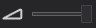

Audio Editor

Audio Editor allows for editing audio assets. Double-clicking on an audio asset displayed in Assets Details will open this editor. The editor is composed of two main parts:
Viewport
The viewport shows the waveform of the audio asset. At the top of the viewport, the original audio file properties are displayed, while above the toolbox, the audio asset properties are shown. These parameters depend on the properties panel. The viewport has a toolbox at the bottom that allows you to test the audio.
| Icon | Description |
|---|---|
 |
Plays the audio asset. |
 |
Enable/Disable playing in a loop. |
|  | Adjust the volume of the playing audio. |
 |
Control the distribution of the audio signal to listen more through the right or left speaker. |
 |
Decrease/Increase the audio speed. |
Properties
The audio properties that you can configure are:
| Property | Available values | Description |
|---|---|---|
| ChannelFormat | Mono / Stereo | The number of channels of audio wave data. |
| SampleRateMode | Low / High | The sample rate of audio wave data. A high sample rate improves the quality but increases the file size. |
| Encoding | PCM8 / PCM16 | Pulse Code Modulation bits. |